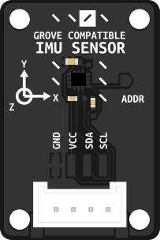

IMU Sensor
Simple to use IMU sensor to get a sense of direction ;)
Background
The LSM6DS3 is a 6-axis inertial measurement unit (IMU) that combines a 3-axis accelerometer and 3-axis gyroscope. It communicates via I2C and provides real-time motion data with low power consumption. The sensor is commonly used in robotics and IoT applications for motion detection, orientation tracking, and gesture recognition. The LSM6DS3TRC variant used here is optimized for embedded systems and offers high accuracy with configurable measurement ranges.
Basic usage
import time
import board
import busio
import digitalio
from adafruit_lsm6ds.lsm6ds3trc import LSM6DS3TRC
imu_i2c = busio.I2C(board.SCL, board.SDA)
sensor = LSM6DS3TRC(imu_i2c, address=0x6b)
while True:
accel_x, accel_y, accel_z = sensor.acceleration
print(f"Acceleration: X:{accel_x:.2f}, Y: {accel_y:.2f}, Z: {accel_z:.2f} m/s^2")
gyro_x, gyro_y, gyro_z = sensor.gyro
print(f"Gyro X:{gyro_x:.2f}, Y: {gyro_y:.2f}, Z: {gyro_z:.2f} radians/s")
print("")
time.sleep(0.5)
Fusion Library
Jordan Boyle write an amazing fusion library to get a quite exact position of your IMU Link to the library: link
Basic Usage
"""
Example usage of the IMU_library for LSM6DS3.
This relatively simple version shows the basic use of the library.
"""
import time
import board
import sys
from IMU_library import IMU
# --- Determine I2C pins depending on the board. Important to allow for new and old boards! ---
print(sys.platform)
if sys.platform == "RP2350": # Raspberry Pi Pico / Pico 2W
import busio
# Adjust these pins to your wiring
i2c = busio.I2C(scl=board.GP5, sda=board.GP4)
else:
# Default board.I2C() works for most boards
i2c = board.I2C()
# --- Initialize the filter using default I2C bus (board.I2C()) ---
imu = IMU(i2c=i2c)
# --- Set desired update rate for the IMU calculations (100Hz is a sensible update rate) ---
desired_update_hz = 100
update_interval = 1.0 / desired_update_hz
last_update_time = time.monotonic()
# --- Set desired rate for outputting relevant information to Serial (a fairly slow process that generally shouldn't be done at more than 5Hz) ---
desired_output_hz = 1
output_interval = 1.0/desired_output_hz
last_output_time = time.monotonic()
while True:
# --- Check the current time for loop control ---
current_time = time.monotonic()
# --- Update the IMU values at the desired update rate (typically 100Hz) ---
if current_time - last_update_time >= update_interval:
last_update_time += update_interval
imu.update()
# --- Output data at the desired rate. Alternatively, this could be where you do additional processing ---
if current_time - last_output_time >= output_interval:
last_output_time += output_interval
# --- Get latest IMU values. Other sensors could also be checked here ---
# Angle estimates (roll = rotation around X, pitch = rotation around Y and yaw = rotation around Z)
roll, pitch, yaw = imu.angle_estimates
# Angular rates
gx, gy, gz = imu.angular_rates
# Print angle estimates
print("Angle estimates (deg):")
print(" Roll:", roll)
print(" Pitch:", pitch)
print(" Yaw:", yaw)
# Print angular rates
print("Angular rates (deg/s):")
print(" gx:", gx)
print(" gy:", gy)
print(" gz:", gz)
Advanced Usage
"""
Example usage of the IMU_library for LSM6DS3.
This version shows more of the optional details e.g. changing default parameters.
"""
import time
import board
import sys
from IMU_library import IMU
from adafruit_lsm6ds import Rate
# --- Step 0: Determine I2C pins depending on the board. Important to allow for new and old boards! ---
print(sys.platform)
if sys.platform == "RP2350": # Raspberry Pi Pico / Pico 2W
import busio
# Adjust these pins to your wiring
i2c = busio.I2C(scl=board.GP5, sda=board.GP4)
else:
# Default board.I2C() works for most boards
i2c = board.I2C()
# ---------------- Step 1: Initialize the filter ----------------
# Use default I2C bus (board.I2C())
# Set accelerometer and gyro data rates (ODR) and complementary filter alpha
imu = IMU(
i2c=i2c, # send the correct type of i2c to the library
accel_rate=Rate.RATE_104_HZ, # accelerometer output rate ~104 Hz
gyro_rate=Rate.RATE_104_HZ, # gyroscope output rate ~104 Hz
alpha=0.98, # complementary filter weight for gyro
norm_every=5, # normalize quaternion every 5 updates
accel_corr_every=2 # apply accel correction every 2 updates
)
# ---------------- Step 2 (optional): Calibrate sensor ----------------
# If this is the first time using a new sensor and you want to remove
# offsets from raw gyro/accel data, run runtime calibration.
# User should hold the sensor stationary and flat during this process.
do_calibration = False
if do_calibration:
imu.calibrate(duration=2.0) # measure offsets over 2 seconds
else:
# Alternatively, you can hard-code previously measured offsets, replacing the default zeros below
imu.set_offsets(gyro_offset=(0.0, 0.0, 0.0),accel_offset=(0.0, 0.0, 0.0))
# ---------------- Step 3: Optionally adjust filter or ODR ----------------
# Can change alpha or data rates at runtime
imu.alpha = 0.97 # increase/decrease trust in gyro
imu.accel_rate = Rate.RATE_104_HZ # change accelerometer ODR if needed
imu.gyro_rate = Rate.RATE_104_HZ # change gyro ODR if needed
# ---------------- Step 4: Main update loop ----------------
# Call update() at high frequency (~100 Hz) to maintain accurate orientation.
# Demonstrates use of other (slower) loops for additional processes.
# --- Set desired update rate for the IMU calculations (100Hz is a sensible update rate) ---
desired_update_hz = 100
update_interval = 1.0 / desired_update_hz
last_update_time = time.monotonic()
# --- Set desired update rate for your main control loop (10Hz to 50Hz is often a sensible rate to use) ---
desired_control_loop_hz = 10
control_interval = 1.0 / desired_control_loop_hz
last_control_time = time.monotonic()
# --- Set desired rate for outputting relevant information to Serial (a fairly slow process that generally shouldn't be done at more than 5Hz) ---
desired_output_hz = 1
output_interval = 1.0/desired_output_hz
last_output_time = time.monotonic()
# --- Including the try...except structure around the main loop handles exiting with Ctrl-C more gracefully ---
try:
while True:
# --- Check the current time for loop control ---
current_time = time.monotonic()
# --- Update the IMU values at the desired update rate (typically 100Hz) ---
if current_time - last_update_time >= update_interval:
last_update_time += update_interval
imu.update()
# --- Update the main control loop at desired update rate (typically 10Hz - 50Hz) ---
if current_time - last_control_time >= control_interval:
last_control_time += control_interval
# --- Get latest IMU values. Other sensors could also be checked here ---
# Angle estimates (roll = rotation around X, pitch = rotation around Y and yaw = rotation around Z)
roll, pitch, yaw = imu.angle_estimates
# Angular rates
gx, gy, gz = imu.angular_rates
# Average update rate
update_hz = imu.update_rate_hz
# --- Add relevant code for further processing here ---
# --- Output data at the desired rate. Alternatively, this could be where you do additional processing ---
if current_time - last_output_time >= output_interval:
last_output_time += output_interval
# Print all information
print("Angle estimates (deg): Roll={:.2f}, Pitch={:.2f}, Yaw={:.2f}".format(
roll, pitch, yaw
))
print("Angular rates (deg/s): gx={:.2f}, gy={:.2f}, gz={:.2f}".format(
gx, gy, gz
))
print("Average update rate: {:.1f} Hz".format(update_hz))
print("-" * 60)
except KeyboardInterrupt:
print("Example terminated by user.")